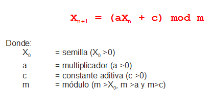

Este algoritmo también conocido como Congruencial fue propuesto por el D.H Lehmer en 1951. Según Law y kelton, este algoritmo ha sido el mas usado.
El algoritmo congruencial genera una secuencia de números enteros por medio de la siguiente recursiva:
Este algoritmo surge del algoritmo lineal cuando c = 0.
Entonces la ecuación recursiva es:
La ventaja de este algoritmo es que implica una operación menos a realizar.